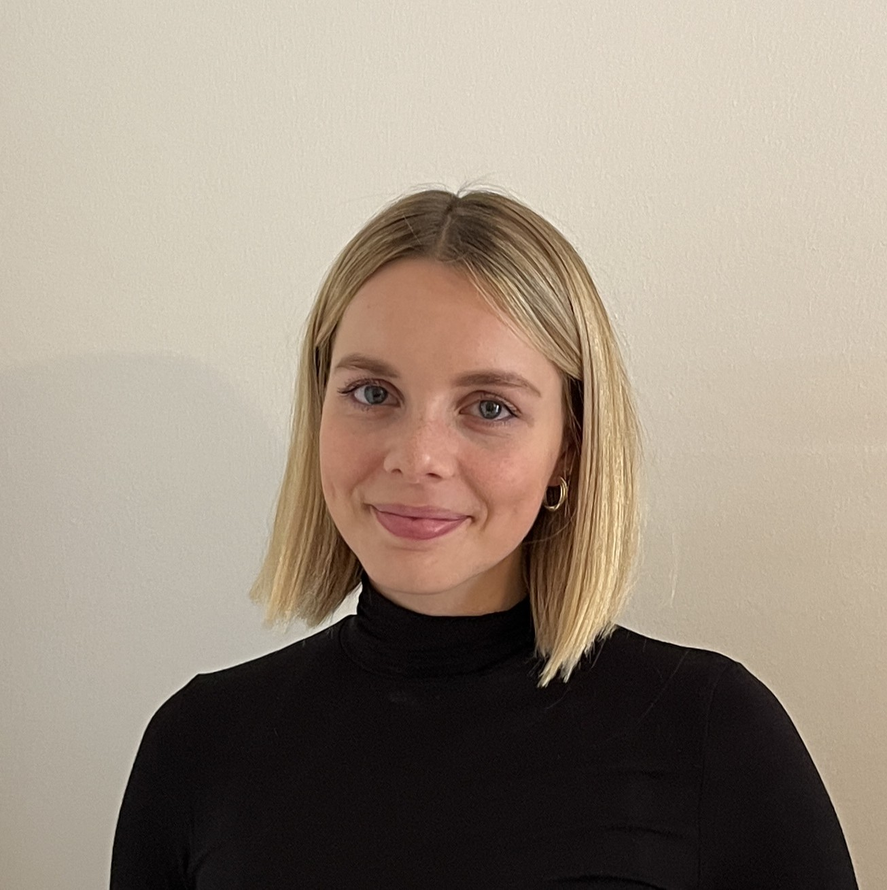

Theresa Henkel
PhD Candidate in Economics
University of Potsdam · Berlin School of Economics
I am a PhD Candidate at the Department of Economics of the University of Potsdam and the Berlin School of Economics. I'm also a member of the Center for Economic Policy Analysis (CEPA Potsdam). My research lies at the intersection of applied microeconomics, with a primary focus on the economics of education and migration.
Curriculum Vitae

01
Research
Applied Microeconomics · Education · Migration · Labour
Work in Progress
Zooming into the Education Production Function: Does Content Format Matter for Student Learning?
Draft in preparation
Migration Opportunities and Human Capital Development
Draft in preparation
02
Talks & Conferences
2025
14. CEPA Mini Workshop, Potsdam
03
Teaching
Universität Potsdam · 2022–Present
- Introduction to Economics [Undergraduate]
- Education Economics [Undergraduate]
Get in Touch
theresa.henkel@uni-potsdam.de
Address
c/o University of Potsdam
Prof. f. VWL, insb. Wirtschaftspolitik
August-Bebel-Str. 89
14482 Potsdam